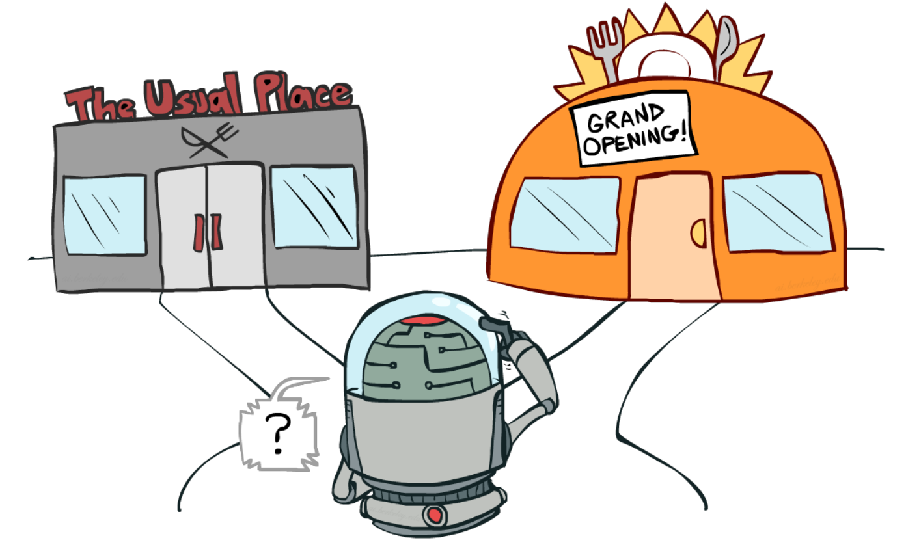
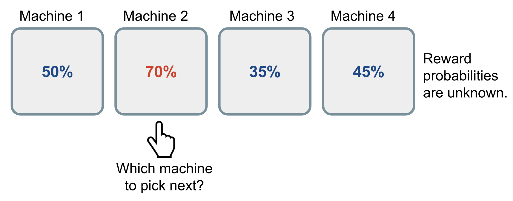
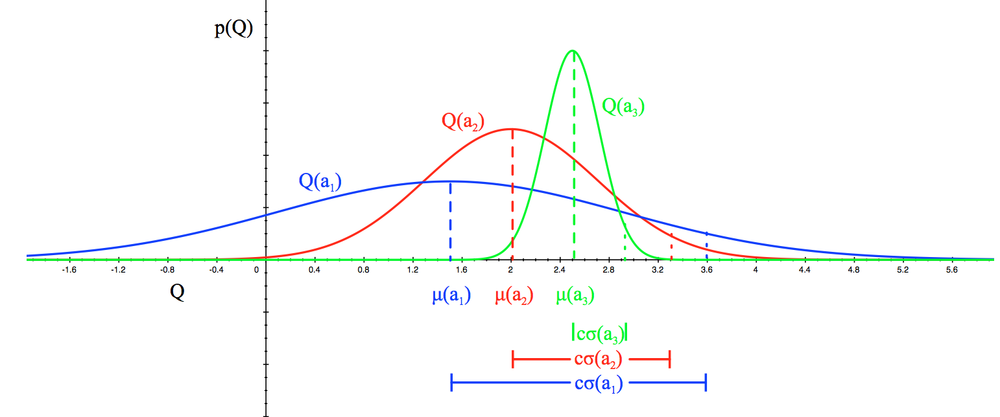
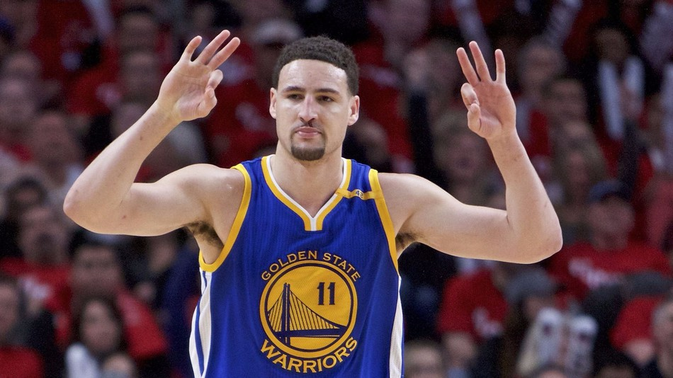
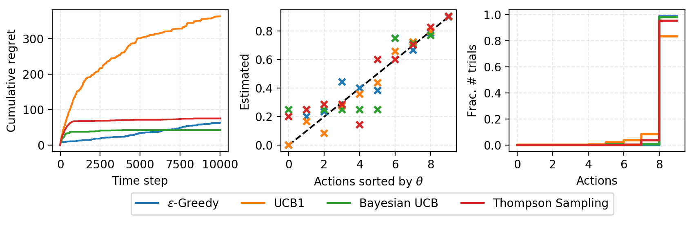
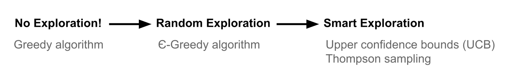

目录
多臂老虎机问题是展示探索与利用困境的经典示例。本文将介绍老虎机问题以及如何使用不同的探索策略来解决它。
这些算法针对伯努利老虎机在 lilianweng/multi-armed-bandit 中实现。
利用与探索
探索与利用的困境在我们的生活中随处可见。比如，你最喜欢的餐厅就在街角。如果你每天都去那儿，就会非常清楚能得到什么，但也会错过发现更好选择的机会。如果你总是尝试新地方，很可能会时不时吃到难吃的食物。同样，线上广告系统也需要在已知最吸引人的广告和可能更成功的新广告之间保持平衡。

如果我们已经掌握了环境的全部信息，即使只用暴力模拟也能找到最佳策略，更不用说许多其他聪明的方法了。这种困境源于信息不完整：我们需要在控制风险的同时收集足够的信息来做出全局最佳决策。利用是指我们充分利用已知的最佳选项。探索则是冒一定风险去收集未知选项的信息。最佳的长期策略可能需要短期的牺牲。例如，一次探索尝试可能完全失败，但它能提醒我们未来不要过于频繁地选择该行动。
什么是多臂老虎机？
多臂老虎机 问题是经典的、很好地展示了探索与利用困境的问题。想象一下你在赌场里面对多台老虎机，每台机器都设置了未知的中奖概率。问题是：如何制定最佳策略以获得最高的长期收益？
本文中我们只讨论试验次数无限的情况。对试验次数有限的限制会引入一种新的探索问题。例如，如果试验次数少于老虎机数量，我们甚至无法尝试每台机器来估算中奖概率（！），因此我们必须在有限的知识和资源（即时间）下做出明智的行为。

一种朴素的方法是持续在一台机器上玩很多很多轮，最终根据 大数定律 来估算“真实”的奖励概率。然而，这种做法非常浪费，而且肯定无法保证获得最佳的长期收益。
定义
现在让我们给出一个科学的定义。
伯努利多臂老虎机可以描述为一个元组 \langle \mathcal{A}, \mathcal{R} \rangle，其中：
它是 马尔可夫决策过程 的简化版本，因为不存在状态 \mathcal{S}。
目标是最大化累积奖励 \sum_{t=1}^T r_t。 如果我们知道具有最佳奖励的最优动作，那么目标就等同于最小化因未选择最优动作而产生的潜在 遗憾 或损失。
最优动作 a^{*} 的最优奖励概率 \theta^{*} 为：
我们的损失函数是直到时间步 T 为止，因未选择最优动作而可能产生的总遗憾：
老虎机策略
根据探索方式的不同，解决多臂老虎机问题有几种方法。
ε-贪婪算法
ε-贪婪算法大部分时间会选择当前已知的最佳动作，但偶尔会进行随机探索。动作价值根据过去经验估算，即对目标动作 a 到目前为止（直到当前时间步 t）观察到的所有奖励取平均：
其中 \mathbb{1} 是二值指示函数，N_t(a) 是到目前为止动作 a 被选择的次数，即 N_t(a) = \sum_{\tau=1}^t \mathbb{1}[a_\tau = a]。
根据 ε-贪婪算法，我们以小概率 \epsilon 选择随机动作，而在其余大部分时间（概率 1-\epsilon）选择目前已知的最佳动作：\hat{a}^{*}_t = \arg\max_{a \in \mathcal{A}} \hat{Q}_t(a)。
查看我的简单实现 在此。
上置信界
随机探索让我们有机会尝试那些我们了解不多的选项。然而，由于随机性，我们有可能最终去探索过去已经确认不好的动作（运气不好！）。为了避免这种低效的探索，一种方法是随时间减小参数 ε，另一种方法是对具有高不确定性的选项保持乐观，从而优先选择那些我们还没有获得可靠价值估计的动作。换句话说，我们偏好探索那些具有很大潜力达到最优价值的动作。
上置信界（UCB）算法通过奖励价值的上置信界 \hat{U}_t(a) 来衡量这种潜力，使得真实价值低于该界限 Q(a) \leq \hat{Q}_t(a) + \hat{U}_t(a) 的概率很高。上界 \hat{U}_t(a) 是 N_t(a) 的函数；试验次数 N_t(a) 越多，界限 \hat{U}_t(a) 应该越小。
在 UCB 算法中，我们总是选择使上置信界最大的贪婪动作：
现在的问题是如何估计上置信界。
Hoeffding 不等式
如果我们不想对分布的形态做任何先验假设，可以借助 “Hoeffding 不等式” —— 这是一个适用于任何有界分布的定理。
设 X_1, \dots, X_t 是 i.i.d.（独立同分布）的随机变量，且均被限制在区间 [0, 1] 内。样本均值为 \overline{X}_t = \frac{1}{t}\sum_{\tau=1}^t X_\tau。那么对于 u > 0，我们有：
对于某个目标动作 a，我们考虑：
则有：
我们希望选择一个界限，使得真实均值低于样本均值加上上置信界的概率很高。因此 e^{-2t U_t(a)^2} 应该是一个很小的概率。假设我们接受一个极小的阈值 p：
UCB1
一种启发式方法是随时间减小阈值 p，因为我们希望在观察到更多奖励后能做出更可靠的界限估计。将 p=t^{-4} 设为可得到 UCB1 算法：
贝叶斯 UCB
在 UCB 或 UCB1 算法中，我们不对奖励分布做任何先验假设，因此必须依赖 Hoeffding 不等式来进行非常通用的估计。如果我们能够提前知道分布，就能做出更好的界限估计。
例如，如果我们预期每台老虎机的平均奖励服从如图 2 所示的高斯分布，就可以将上界设为 95% 置信区间，令 \hat{U}_t(a) 等于两倍标准差。

查看我对 UCB1 和使用 Beta 先验于 θ 的 Bayesian UCB 的简单实现。
Thompson 采样
Thompson 采样思想简单，但在解决多臂老虎机问题上表现非常出色。

在每个时间步，我们希望按照动作 a 是最优动作的概率来选择它：
其中 \pi(a ; \vert ; h_t) 是给定历史 h_t 下选择动作 a 的概率。
对于伯努利老虎机，很自然地假设 Q(a) 服从 Beta 分布，因为 Q(a) 本质上是 伯努利 分布中的成功概率 θ。\text{Beta}(\alpha, \beta) 的取值范围是 [0, 1]；α 和 β 分别对应我们成功或失败获得奖励的次数。
首先，根据对每个动作的先验知识或信念来初始化 Beta 参数 α 和 β。例如：
在每个时间 t，我们从每个动作的先验分布 \text{Beta}(\alpha_i, \beta_i) 中采样一个期望奖励 \tilde{Q}(a)。然后在这些采样值中选择最佳动作：a^{TS}_t = \arg\max_{a \in \mathcal{A}} \tilde{Q}(a)。观察到真实奖励后，我们可以相应地更新 Beta 分布，这本质上是在已知先验和观测数据似然的情况下进行贝叶斯推断来计算后验。
Thompson 采样实现了 概率匹配 的思想。因为它的奖励估计 \tilde{Q} 是从后验分布中采样得到的，每个这样的概率都等价于在观测历史条件下对应动作是最优动作的概率。
然而，对于许多实际且复杂的问题，使用贝叶斯推断基于观测到的真实奖励来估计后验分布可能在计算上不可行。如果我们能够使用 Gibbs 采样、Laplace 近似和自助法等方法来近似后验分布，Thompson 采样仍然可以工作。这篇 教程 提供了全面的综述；如果你想深入了解 Thompson 采样，强烈推荐阅读。
案例研究
我在 lilianweng/multi-armed-bandit 中实现了上述算法。可以使用随机或预定义的奖励概率列表来构造 BernoulliBandit 对象。老虎机算法被实现为 Solver 的子类，将 Bandit 对象作为目标问题。累积遗憾会随时间被跟踪记录。

（左）时间步与累积遗憾的关系图。 （中）真实奖励概率与估计概率的关系图。 （右）在 10000 步运行中每个动作被选择的比例。*
总结
我们需要探索，因为信息是有价值的。从探索策略的角度来看，我们可以完全不探索，只关注短期回报；或者偶尔进行随机探索；甚至更进一步，我们不仅探索，而且对探索哪些选项非常挑剔——具有更高不确定性的动作会受到偏好，因为它们能提供更高的信息增益。
